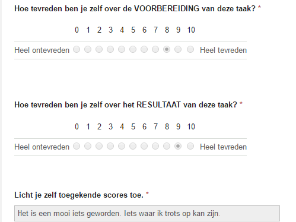
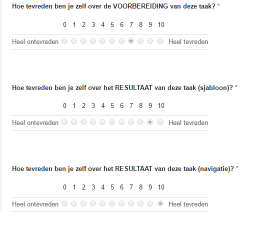

Semester 2
IT-tapa en instructiefilmpje:
middagsessie:
instructiefilmpje:
Foire Aux Questions:

IT-autobiography:

IT-profile & -curriculum:
Ontwerp en navigatie GIP-website:

Semester 2
Taak 8: Applicatie met een database
Taak 9: interactieve (client-side web-)applicatie
Taak 10: Een test-opstelling
Taak 11: Reportage photo du stage
Taak 12: Review
Taak 13: Bedrijfseconomische analyse
Taak 14: Dankbrief aan stagebedrijf
Taak 15: Analyse v.d. huisstijl v.h. stagebedrijf
Taak 7 en 18: Ontwerp en navigatie GIP-website
Taak 19: Publicatie van taken op de GIP-website
Algemeen: Proces en verloop van je GIP